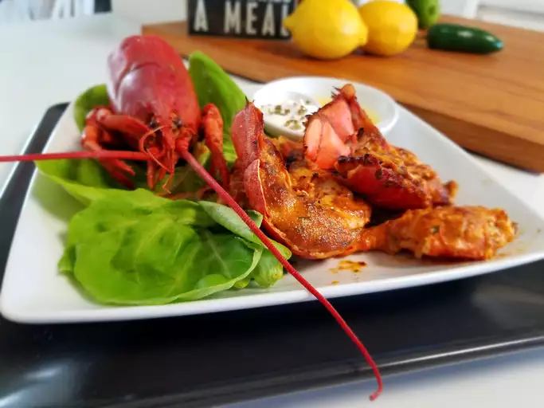

Home
Deviled Lobster Tails

Description
Deviled lobster tails are a luxurious and flavorful seafood dish that elevates classic lobster with a
rich, spiced topping. The lobster tails are split and lightly cooked before being topped with a savory
mixture of butter, breadcrumbs, Dijon mustard, paprika, and aromatic seasonings. This topping creates a
golden, slightly crispy crust when baked or broiled, adding a delightful contrast to the tender,
succulent lobster meat. Often finished with a squeeze of fresh lemon and a sprinkle of parsley, deviled
lobster tails offer a perfect balance of richness, spice, and freshness, making them an elegant choice
for special occasions or gourmet dining at home.
Ingredients
- 1/4 cup mayonnaise
- 2 tablespoons chopped tarragon
- 1 tablespoon of sriracha sauce
- 1 teaspoon of ground paprika
- 1 teaspoon of lemon juice
- 1/4 teaspoon of ground cayenne pepper
- 1 pinch of salt
- 4 frozen lobster tails - thawed, split in half, and deveined
Steps
- Mix mayonnaise, tarragon, sriracha sauce, paprika, lemon juice, cayenne pepper, and salt together in
a bowl.
- Preheat oven to 500 degrees F (260 degrees C). Set oven rack about 8 inches from the heat source and
preheat the oven's broiler.
- Loosen lobster meat from the shell, leaving it attached near the tip of the tail. Place tails on a
baking sheet lined with crinkled aluminum foil to help keep them in place.
- Spoon some of the mayonnaise mixture beneath the lobster meat and spread a generous amount on top.
- Broil in the preheated oven until lobster tails are browned and cooked through, 5 to 7 minutes.